01
필수사업 참여 신청
본 사업에 참여하는 기업들에게 필요한 컨설팅 수요를 파악하고자 아래와 같이 설문을 진행하오니, 각 기업 대표자 및 예비창업자 분들의 협조 부탁드립니다. 지원해주신 기업들을 대상으로 1:1 멘토링 신청방법 및 기타 사업 관련 내용을 신청 이메일로 전달드립니다.
사업 참여신청 폼 열기 ↗서울시50플러스재단과 MYSC가 함께하는 8개월간의 통합 성장 프로그램. 선정기업의 단계적 성장을 위한 전주기 운영체계 — 진단·멘토링·AI 특화·IR·데모데이까지.
중장년의 풍부한 경력자산을 시장에서 작동하는 사업 모델로 전환하는 8개월간의 전주기 지원 프로그램입니다. 4월 모집을 시작으로 진단–멘토링–AI 특화교육–IR·오픈이노베이션–데모데이까지 단계적으로 연계되는 연간 추진체계로 운영됩니다.
북부·서부·중부·남부 4개 캠퍼스에서 선정된 중장년 창업가. 캠퍼스별 전담 멘토와 1:1 매칭되어 진행됩니다.
4월 모집·진단을 시작으로 10월 데모데이까지 진행되며, 11월에 최종 정산과 성과 정리가 이루어집니다.
서울시50플러스재단의 정책 자원과 MYSC의 임팩트 비즈니스 액셀러레이팅 역량이 결합된 통합 운영 체계입니다.
MYSC는 2011년 설립 이후 컨설팅·혁신성장기업 육성·임팩트 투자를 통해 공공기관·대기업·스타트업과 협력하며 혁신 생태계 구축에 기여해왔습니다. 2025년 상반기 투자 액셀러레이터 1위, 700개 VC/AC 중 전체 5위의 트랙 레코드를 보유하고 있습니다.
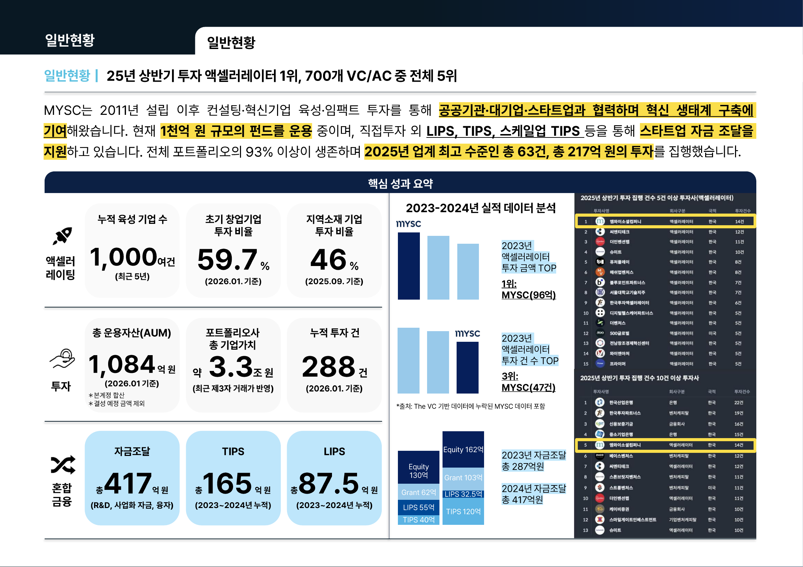
MYSC는 현재까지 총 25개의 펀드를 조성하였으며, 매년 약 500여 개의 국내외 스타트업을 육성하고, 연간 50건 이상의 활발한 투자를 진행하고 있습니다. 특히 인구구조 변화에 따른 사회문제에 주목한 시니어 비즈니스 관련 투자를 꾸준히 해오고 있습니다.
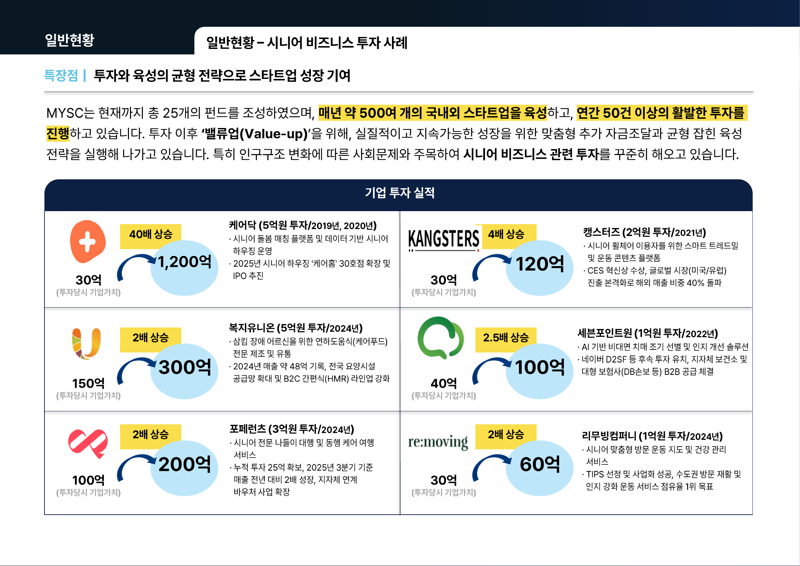
국내외 네트워크를 활용해 중장년 스타트업의 성장과 시장 확장을 적극 지원합니다. 2025년 싱가포르·태국 법인 설립을 통해 아시아 시장 진출을 본격화하며, 국내에서는 제주·호남·대구 지점을 통해 전국 단위의 협력 기반을 강화합니다.
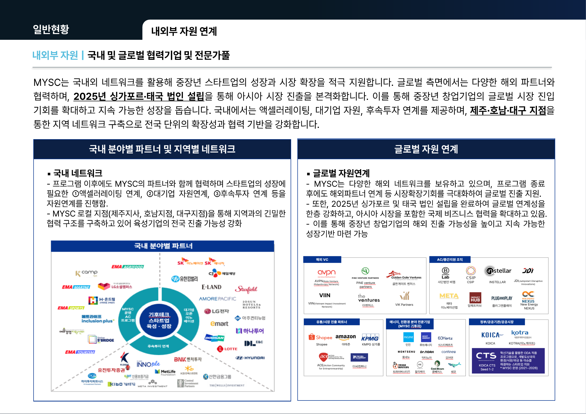
중장년 경력 자산의 비즈니스 퀀텀 점프 전략. 본 사업은 중장년의 경력자산을 시장 성과로 전환하는 L.E.A.P. 전략을 기반으로, 서울형 중장년 기술창업의 성장 기준을 새롭게 정립합니다.
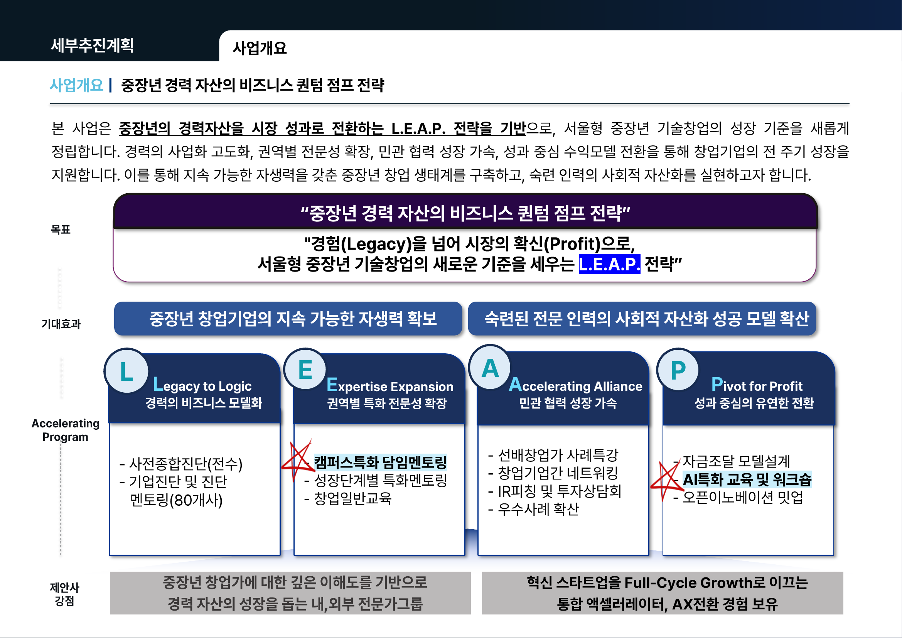
총 8개월간 기업맞춤형 성장 지원 프로그램 운영. 본 사업은 진단–성장–연계–성과확산으로 이어지는 연간 타임라인 기반의 전주기 운영체계로 설계되었습니다.
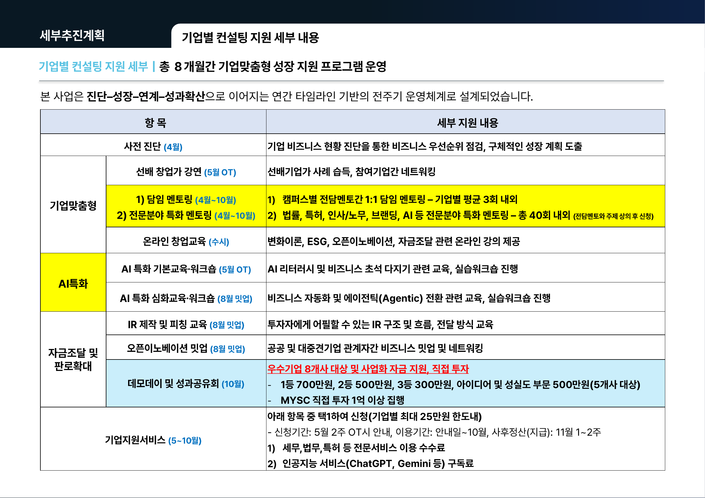
4월 모집을 시작으로 진단–멘토링–AI 특화교육–IR·오픈이노베이션–데모데이까지 단계적으로 연계되는 연간 추진체계로 운영됩니다. 기업 맞춤형 멘토링과 KPI 점검, 투자역량 강화 프로그램을 통해 성장 단계를 체계적으로 고도화하며, 최종적으로 성과공유회와 우수사례 확산을 통해 실질적 투자 연계와 정책성과 창출까지 완결하는 구조입니다.
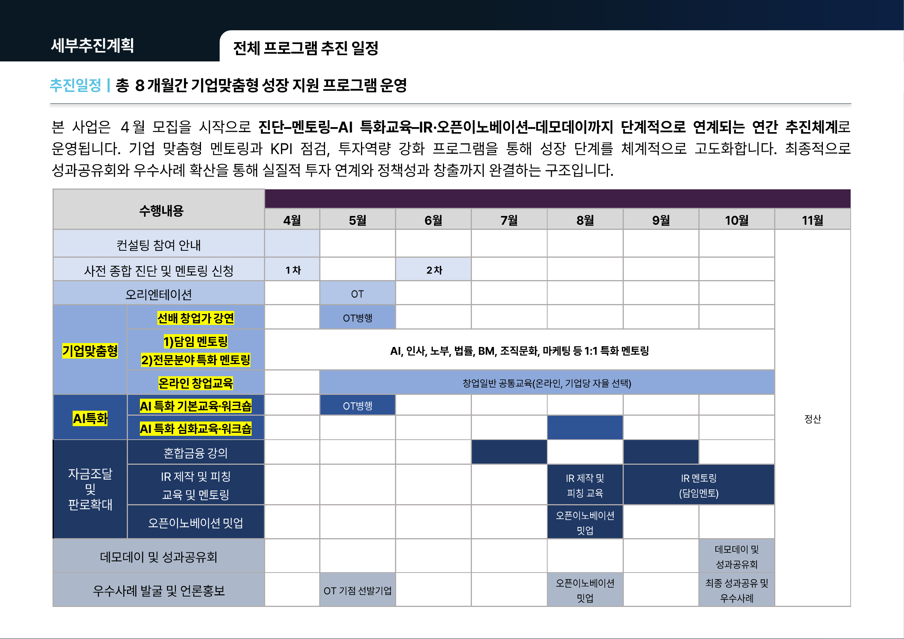
※ 5월 OT는 OT(오리엔테이션)를 대체하여 진행된 역량강화교육으로, 선배 창업가 강연·AI 특화 기본교육이 함께 병행되었습니다.
4개 캠퍼스에 1명씩 전담 멘토가 배정되어 있습니다. 담임 멘토는 8개월간 기업의 핵심 의사결정 파트너 역할을 하며, 필요 시 전문분야 특화 멘토를 추천·연결합니다.
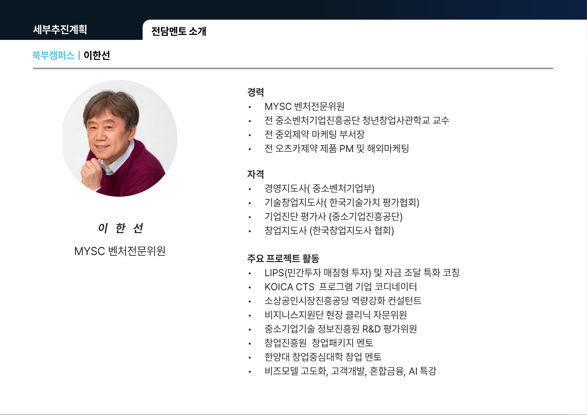
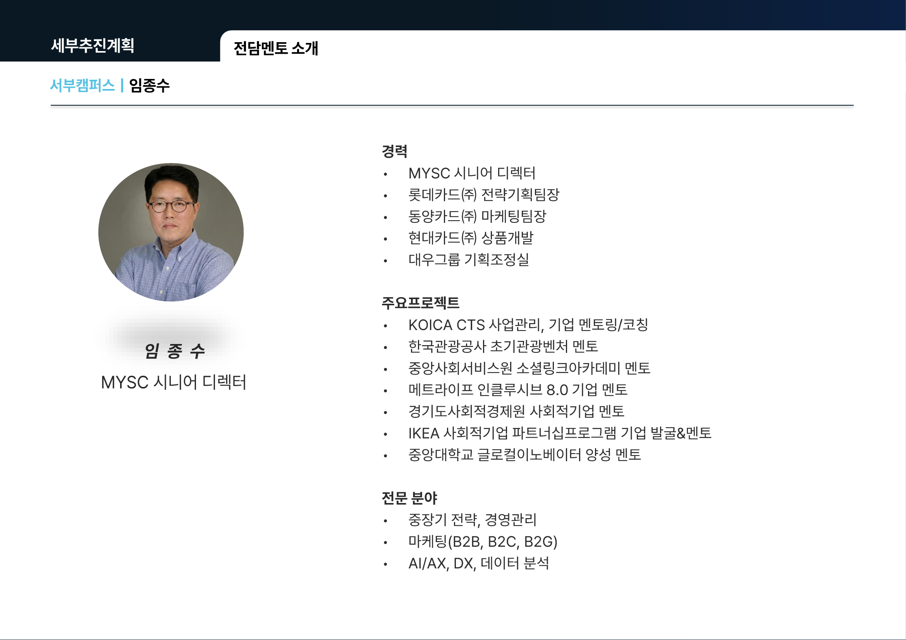
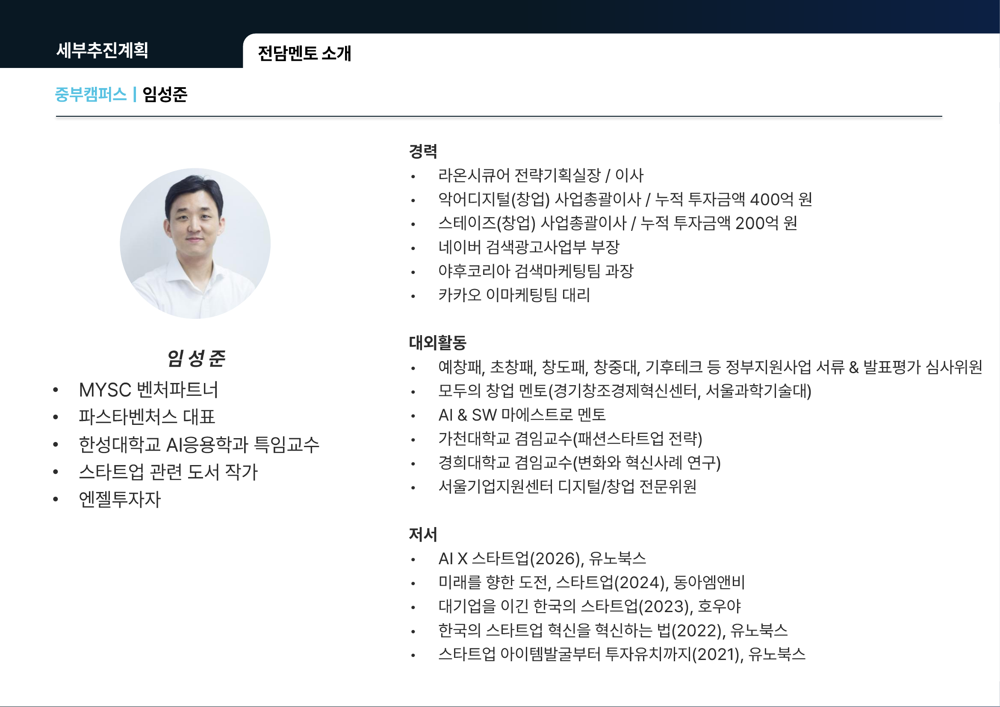
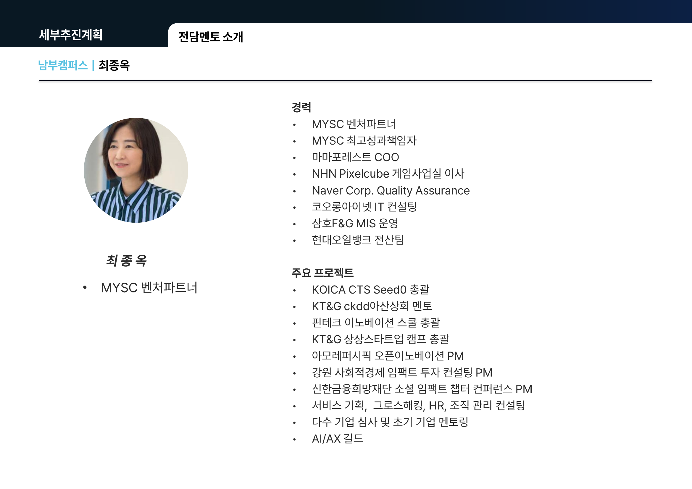
사업 참여신청, 1:1 전담멘토링 신청, 온라인 창업교육(MYSClass) 수강, 기업지원서비스 신청 등 각 지원 항목의 신청 절차를 단계별로 안내합니다.
본 사업에 참여하는 기업들에게 필요한 컨설팅 수요를 파악하고자 아래와 같이 설문을 진행하오니, 각 기업 대표자 및 예비창업자 분들의 협조 부탁드립니다. 지원해주신 기업들을 대상으로 1:1 멘토링 신청방법 및 기타 사업 관련 내용을 신청 이메일로 전달드립니다.
사업 참여신청 폼 열기 ↗담임 멘토와 1:1로 진행되는 미팅으로, 사전 제출한 기업 자가진단 결과물을 바탕으로 KPI 달성을 위한 현황 점검과 기업의 질의응답으로 진행됩니다.
⚠ 주의 — 구글폼을 통하여 사업 참여 신청을 완료하셔야 1:1 멘토링 신청이 가능합니다!
기업육성플랫폼 가입절차 가이드라인을 확인 후 회원가입을 먼저 진행합니다.
※ 사전신청 이메일과 가입 아이디가 다르다면 시트 비고란에 내용을 남겨주세요.본인 기업 전담 멘토 탭에서 ‘승인요청’ 선택. 운영진 확인 후 ‘승인완료’로 변경됩니다.
※ 영업일 기준 1~2일 내 승인1:1 멘토링 전, 반드시 기업육성플랫폼을 통한 사전기업진단을 완료해주세요.
※ 가입절차 및 기능 관련 문의는 가이드북에 상세히 작성되어 있습니다.사업참여신청과 기업육성플랫폼 가입을 모두 완료하셔야 1:1 멘토링 신청이 완료됩니다.
2026 중장년 창업컨설팅 1:1 멘토링 신청 기업에게만 공유되는 강의입니다. 1:1 멘토링 신청 기업을 대상으로 온라인 강의 수강 방법을 아래와 같이 안내드립니다.
상단 우측의 회원가입 버튼을 통해 가입을 진행합니다.
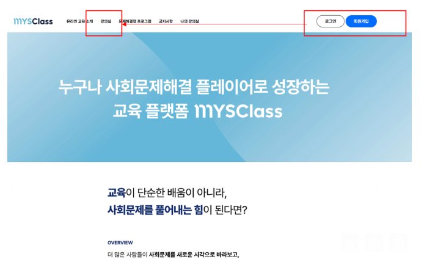
상단 네비게이션의 강의실 메뉴에서 강의 목록으로 이동합니다.
패키지 목록에서 해당 강의를 클릭합니다.
강의 상세 페이지에서 패키지 신청 버튼을 누릅니다.
신청에 필요한 기본정보를 작성합니다.
쿠폰번호는 멘토님들을 통해 확인해주세요.
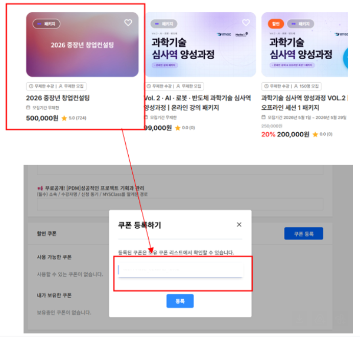
주의사항을 확인하고 동의 후 신청을 마무리합니다.
신청 완료 시점부터 강의실에서 자유롭게 수강할 수 있습니다.
기업별 최대 25만원 한도 내에서 ① 전문서비스 이용 수수료(세무·법무·특허 등) 또는 ② 인공지능 서비스 구독료(ChatGPT, Gemini 등) 중 택1하여 신청·이용하고 사후정산하는 서비스입니다.
| 구분 | 인정되는 증빙 | 유의사항 |
|---|---|---|
| 택 1 | 세금계산서 사업자 명의 세금계산서 (공급자·공급받는자 기재) |
세금계산서 발급 권장 |
| 영수증 신용카드 매출전표 (간이영수증 불가) |
사업자 명의 결제 원칙 (개인카드 시 담당자 확인) | |
| 필수 제출 | 계약서 혹은 견적서 서비스 이용 계약서 (계약금액 및 이용 내용 명시) |
세금계산서·영수증과 함께 제출 권장 |
| 구분 | 인정되는 증빙 | 유의사항 |
|---|---|---|
| 택 1 | 결제 내역서 앱/웹 결제 내역 캡처 또는 PDF 출력 |
결제일·금액·서비스명 확인 가능해야 함 |
| 이메일 영수증 결제 완료 후 발송된 이메일 영수증 출력 |
회사 법인 혹은 대표자 이름·이메일 확인 가능해야 함 | |
| 필수 제출 | 카드 명세서 카드사 명세서 해당 항목 캡처 (서비스명·금액 포함) |
회사 법인 혹은 대표자 명의의 카드 지출만 인정 |
선정기업 참여자들이 가장 많이 묻는 질문을 정리했습니다. 이 외 궁금한 점은 담임 멘토 또는 운영사무국으로 문의해 주세요. (+82-(0)2-499-5111 · 2026seniorsupport@gmail.com)